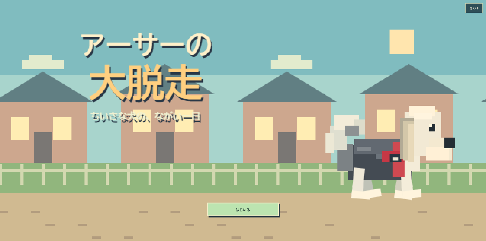
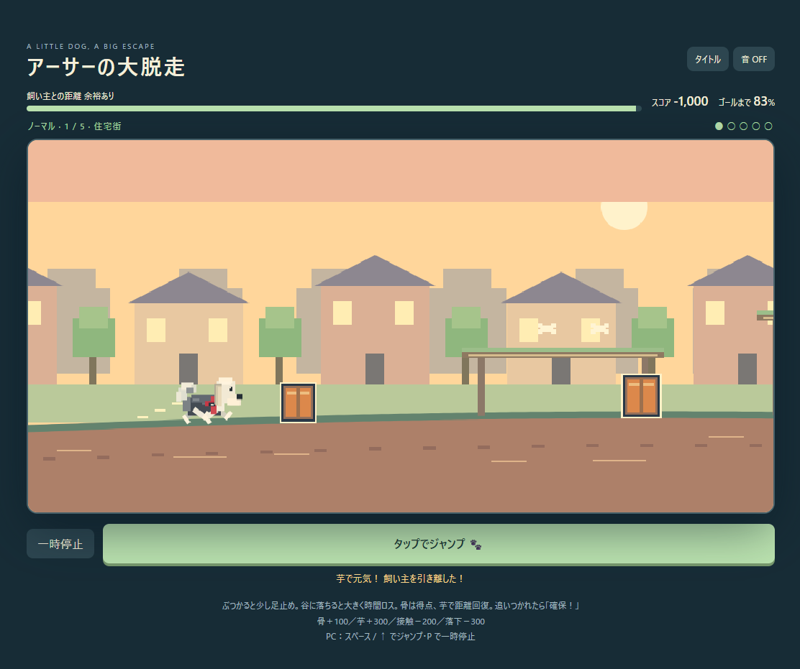
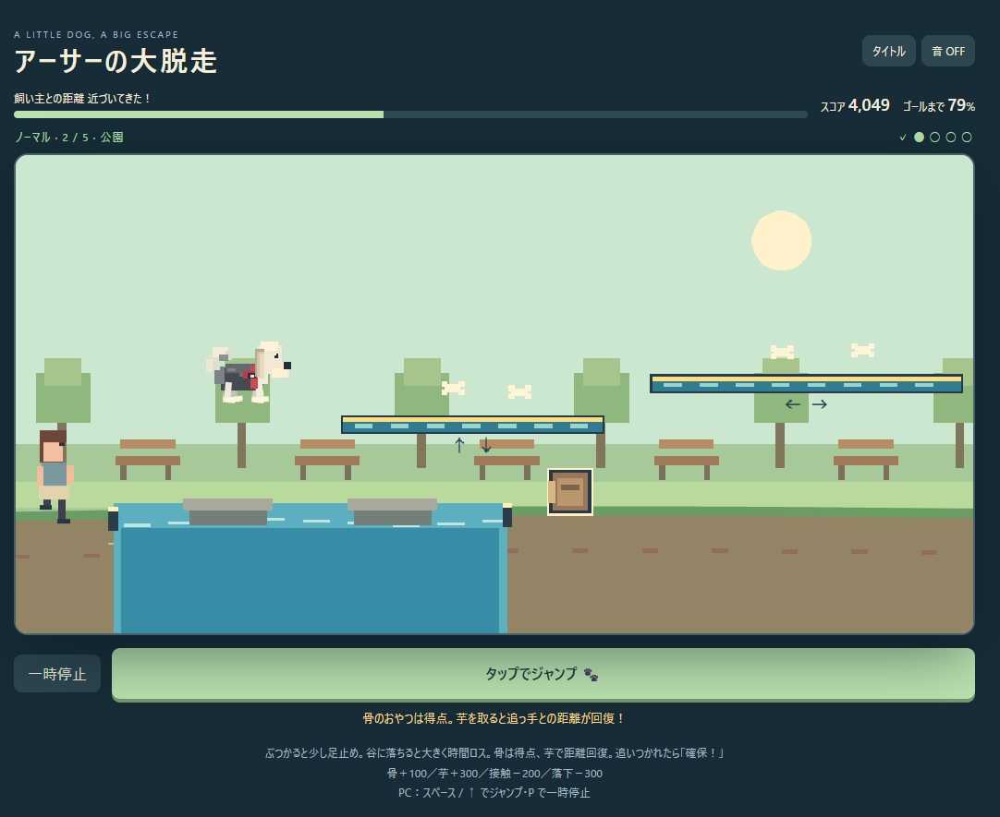

A LITTLE DOG, A BIG ESCAPE
アーサーの大脱走
完成版・無料
ちいさな犬の、ながい一日。
散歩中にリードがプツン！
自由になったアーサーは、飼い主のもとを離れて大脱走！
街を駆け抜け、障害物をジャンプで飛び越え、 追いかけてくる飼い主から逃げ切ろう！
ゲーム紹介
『アーサーの大脱走』は、ジャンプ操作で障害物をかわしながら ゴールを目指す横スクロールアクションゲームです。
短く押せば小ジャンプ、長く押せば大ジャンプ。 障害物や足場を見極めながら進みましょう。
骨を集めてスコアアップ！ 芋を取ると、追いかけてくる飼い主との距離を広げられます。 全5ステージのクリアを目指してください。
スクリーンショット


操作方法
スマートフォン
- 短くタップ：小ジャンプ
- 長押し：大ジャンプ
- スペースキー／上矢印キー：ジャンプ
- Pキー：一時停止
ゲーム情報
ジャンル：横スクロールアクション
公開状態：完成版
ステージ数：全5ステージ
対応環境：PC・スマートフォン
プレイ料金：無料
制作：STUDIO AD4
ご意見・ご感想を募集しています
完成版ですが、今後も改良を続けていきます。 面白かったところ、難しかったところ、不具合など、 ぜひ掲示板でお聞かせください。